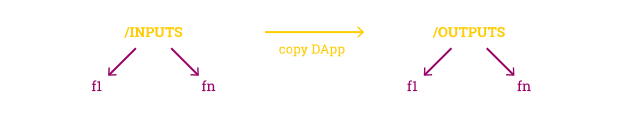
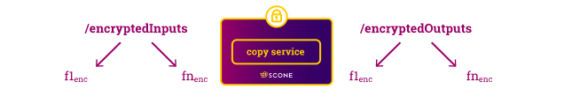
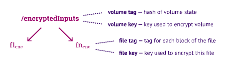
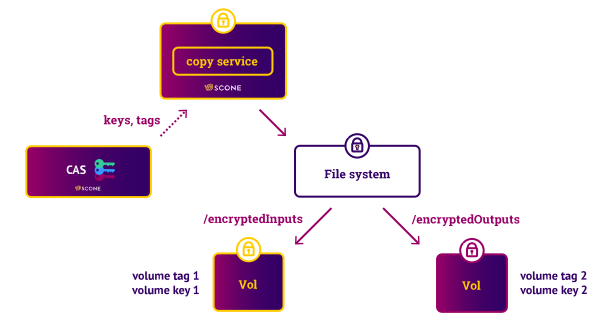
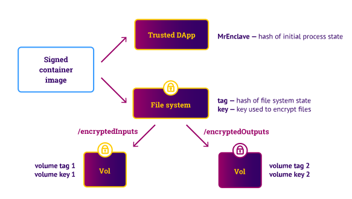
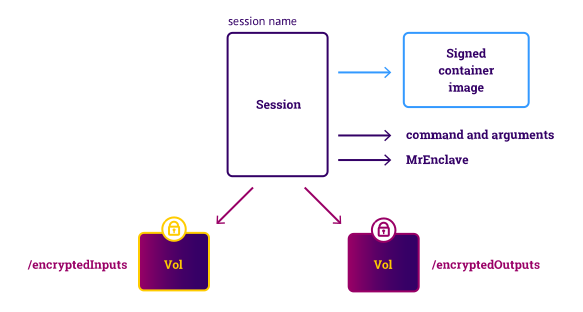
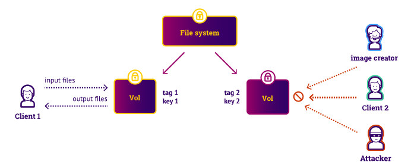

Trusted DApps with SCONE and iExec
This tutorial shows how to build a trusted DApp for the iExec platform. A DApp is a decentralized application that can be executed on hosts of a decentralized network. To learn about basic terminology and concepts of SCONE, we recommend that you read the preceding tutorial pages first. Note that SCONE supports most common programming languages: please have a look at our examples for C, C++, Fortran, GO, Rust, Python, Java, and JavaScript/Node.js. In this tutorial, we show how to build a trusted DApp using C.
The transfer service used by this use case is not operational anymore
To try this example, you would need to replace the the "transfer service" by a more reliable
way to transfer files. Eventually, we will rework this example to use a reliable service
to transfer files. For now, we leave it online since it demonstrate some of the features of SCONE.
Also, maybe somebody will send us a pull request for using github instead of tansfer.sh?
CLI
Trusted DApp
SCONE helps developers to protect the integrity as well as the confidentiality not only of data at rest (i.e., on disk) and data being transmitted but also all data stored in main memory. Note that any root user can easily dump the main memory of any application and in this way might gain secrets like the keys used to encrypt the data at rest.

By trusted DApp, we refer to a DApp that executes inside a trusted execution environment (TEE) in such a way that not even an attacker with root rights can access the data of the application. SCONE simplifies to run applications inside of TEEs as well as to transparently encrypt and decrypt files. SCONE is designed to be independent of the actual TEE implementation. Right now -- since there is a lack of appropriate hardware alternatives -- SCONE supports only Intel SGX.
SCONE Platform
The SCONE platform helps to run DApps inside of TEEs without source code modifications. In this tutorial, we
-
describe how to build a simple application to run with SCONE inside of an enclave, i.e., inside an Intel SGX TEE,
-
show how to compile the simple trusted DApp with the help of an Alpine container,
-
how to deploy and execute inside of an Alpine container,
-
introduce the workflow of where and how data is encrypted, pushed to the application and then decrypted
-
explain how keys are managed and passed to a trusted DApp, and
-
show how to test this application on your own infrastructure.
Trusted copy DApp
We show how to implement a simple copy command as a trusted DApp. This is of course not a realistic DApp but it helps us to show all steps necessary to build and run trusted DApps.
The copy DApp copies files located in an input directory /INPUTS to an output directory /OUTPUTS of the client the machine.

With the help of SCONE, this copy DApp actually copies encrypted files such that the SCONE transparently decrypts and checks the integrity of files that are read by the application. This protects the confidentiality and integrity of the files without any need to change the application itself. Also, SCONE encrypts and integrity protects the files that are written by the application. Each file is encrypted with a random key generated and managed by SCONE inside the enclave.

With the help of a CLI (command line interface deployed in a container, see below in CLIs, a client can encrypt and push files stored on its client machine to the copy DApp. The copy DApp copies the files. The CLI can decrypt the files after the execution of the DApp.

We introduce the commands to perform this example below.
Encrypted Volumes
Containers support volumes as a way to persist data. Trusted DApps for the iExec platform have always two encrypted volumes mapped into their file system:
- an encrypted volume for input files mapped in the container in directory /encryptedInputs, and
- an encrypted volume for output files /encryptedOutputs.
We show below how the input files are encrypted with the help of the CLI and pushed to the container. Moreover, we show how to decrypt the files with the help of the CLI.

To access an encrypted volume, one needs a key and a tag. The key is used to encrypt the individual keys of the files of the volume, i.e., it is used to protect the confidentiality of the files. The tag describes the current state of the volume. Any change of any file in the volume will result in a new tag. The tag is used to protect the integrity and freshness of the files:
- any unauthorized modification of the volume will be detected since the correct tag can only be computed by parties knowing the key of the volume (integrity protection).
- any rollback to older version of the volume will be correctly encrypted but will have an old tag. Hence, rollbacks to older versions will be detected (freshness protection).
Key and Tag Management
The copy DApp requires access to keys and tags to read the encrypted input files (i.e., the input volume) and to write the encrypted output files (i.e., the output volume). Passing the keys and tags to the copy DApp is non-trivial since we need to ensure that no other DApp nor any attacker can read or modify the keys or the tags.

To pass the keys and tags to a trusted DApp, SCONE provides a configuration and attestation service (CAS). The CAS can ensure that only the copy DApp can access the keys and tags by verifying that it talks to an unmodified copy DApp. This process is called attestation and is performed with the help of the Intel SGX CPU extension.
A trusted DApp is deployed with the help of a container image hosted on docker hub or some similar repository. We recommend that these container images are signed using Docker content trust. Note that content trust is not sufficient to ensure that we talk to an unmodified copy DApp since, for example, an attacker with root access could change this image on the host on which it is deployed.
To establish trust between two communication partners, they typically authenticate each other with the help of TLS. An entity needs to know a private key to authenticate itself. When a trusted DApp like the copy DApp starts up it does not know such a private key yet. Note that any key that might be stored in plain text in the image, could be read by any entity that is permitted to access that image. One could encrypt the private key in the image but then the trust DApps would need to know the key to decrypt the private key. Note that the code that runs inside of an enclave, is in general not encrypted. Hence, one cannot store the private key inside of the code either.
Attestation - unlike authentication - does not need a private key. It ensures that the correct code is executing. To distinguish between different instances of a trusted DApp, on startup, the SCONE runtime generates a random private/public key pair inside of the enclave. This means that the private key can be kept secret inside of the enclave. This public key is used to identify this instance and one can perform TLS authentication to ensure that one talks to a specific instance.

To attest a trusted DApp, we need to describe the state of this DApp. In general, this consists of a hash value that describes the trusted DApp (called MrEnclave) and a tag that describes the file systems state. In the case of the copy DApp, the file system (mounted at /) does not need to be attested - only the encrypted input volume (mounted at /encryptedInputs) and encrypted output volume (mounted at /encryptedOutputs) needs to be attested.
When a trusted DApp starts up, it connects to the CAS to perform an attestation. This attestation ensures that MrEnclave is the expected value and that the file system and the mounted volumes are in the correct state, i.e., the tags have the expected values. Note that MrEnclave will depend on the heap and stack size, i.e., changing the values will require an update of the expected MrEnclave.
A trusted DApp will typically write to the output volume. This will change the tag of the output volume. To ensure that a client can read the current state of the volumes written by a trusted DApp, the tags will be pushed to the CAS when a trusted DApp exits.
Attesting CAS
CAS is written in Rust, a safe and efficient programming language. The type-safety ensures that simple programming bugs can be exploited by attackers to hijack services. A client can attest a valid CAS in two ways:
- via the Intel attestations service, and/or
- via the certificates provided by CAS.
Right now, the CLI verifies that it talks to a correct CAS with the help of TLS. The client only uses TLS and verifies that the CAS has the correct certificate. Only a CAS will be able to get this certificate. In a later version, we will additionally ensure that the CAS provides a correct report by the Intel attestations service.
CAS is trusted, managed service: it can be operated by a provider but the provider is not able to access the sessions and in particular, the secrets of the clients. Right now, we run a public CAS service for debugging and testing. This CAS runs in debug mode, i.e., you should not use this CAS to pass secrets.
For clients that need to run a private CAS services, we will enable clients to run their own CAS. Please contact us if you want to run your own CAS or if you need access to CAS running in production mode.
To run a trusted DApp in production mode, you need either to get a MrSigner from Intel or you need access to Intel SGX CPU that supports flexible launch control. Contact us, if you want to run trusted DApps in production mode.
Sessions
We need to specify the value of MrEnclave and the state (i.e., the tags) of the of the volumes and in the general case, also the file system. To do so, CAS supports a security policies. We call such a security policy a session.

A session specifies what volumes are mounted and where they are mounted, the keys and tags of these volumes and MrEnclave of the trusted DApp. One problem that we need to address is that each client of a trusted DApp cannot only protect its data from an attacker but also from other clients of the trusted DApp, the entity that generated the image and the entities that manage the CAS or the host on which the trusted DApp is executed.

To address this issue, we provide a way to have individually encrypted volumes for each session. In other words, each client of a trusted DApp can customize the image by providing input and output volumes and only the instance of this client can access these volumes. No other client nor the image generator can access the keys and hence, these volumes.
A client generates these keys (in the CLI). A session specifies these keys. A session is typically derived from a session template (more about session language here). The session template of the copy DApp looks like this:
name: $SESSION
version: "0.3"
services:
- name: application
image_name: registry.scontain.com/sconecuratedimages/dapps:copy_demo
mrenclaves: [68112f06718fc390fb4a56e9d1f019b63285b6b6383ed73e1a5d2fa0b66e57c0]
command: /application
pwd: /
environment:
SCONE_MODE: hw
volumes:
- name: encrypted-input-files
fspf_tag: $INPUT_FSPF_TAG
fspf_key: $INPUT_FSPF_KEY
- name: encrypted-output-files
fspf_tag: $OUTPUT_FSPF_TAG
fspf_key: $OUTPUT_FSPF_KEY
images:
- name: registry.scontain.com/sconecuratedimages/dapps:copy_demo
volumes:
- name: encrypted-input-files
path: /encryptedInputs
- name: encrypted-output-files
path: /encryptedOutputs
security:
attestation:
tolerate: [debug-mode, hyperthreading, outdated-tcb]
ignore_advisories: "*"
Note that in most cases you can start from a generic session template and you do not need to worry about the syntax and all the details of session descriptions. The session templates of trusted DApps look very similar to the session template above. The three differences are that
- the image name will be updated,
- the list of mrenclaves will be different, and
- one might want to specify arguments passed to the trusted DApp (key command).
Building an DApp
The source code of this application, you can retrieve from
git clone https://github.com/scontain/copy_dapp.git
cd copy_dapp
The source code of the trusted copy DApp is file copy_files.c.
We build this program with the help of the standard gcc that is part of Alpine Linux (see the Dockerfile below). For convenience, we provide an Alpine image (i.e., registry.scontain.com/sconecuratedimages/muslgcc) that has gcc preinstalled.
FROM registry.scontain.com/sconecuratedimages/muslgcc
COPY copy_files.c /
# compile with vanilla gcc
RUN gcc -Wall copy_files.c -o /copy_files
FROM registry.scontain.com/sconecuratedimages/dapps:copy_dapp_runtime
COPY --from=0 /copy_files /application
RUN apk add curl bash unzip zip
ENTRYPOINT ["/application.sh"]
The image registry.scontain.com/sconecuratedimages/dapps:copy_demo
is built by the script build-image.sh. This script also determines
MrEnclave of the application and writes a session template copy_dapp.yml.
Testing
We now show how to test the trusted copy DApp. After building the image by executing
./build-image.sh
We can execute this image on an SGX-capable host. This host has to have the SCONE local attestation service (LAS) and Docker installed. We describe in the installation section on how to install SGX driver and how to install LAS here.
Compatibility of LAS and CAS
If you are using one of our public CAS as a secretManagementService (it is current default behavior of our images), please insure that your local version of LAS has at least same major version as CAS that you are accessing. Current default CAS has version 4.2.1, so your local LAS has to be 4.*.
In what follows, we assume that the name of the host is stored in environment variable host.
SETUP
To execute the trusted copy DApp, we need to create some files to copy. We create an INPUTS directory and store files there. We also create OUTPUTS directory, KEYS directory to hold generated keys and ZIP to hold temporary files. We also copy the session template generated when building the container image.
mkdir -p EXAMPLE
cd EXAMPLE
mkdir -p KEYS INPUTS OUTPUTS ZIP
echo "Hello world" > INPUTS/f1.txt
echo "Hello together" > INPUTS/f2.txt
cp ../copy_dapp.yml KEYS/
Step 1
We encrypt these files and push the zipped up files for now to free.keep.sh.
Let's execute the first step of encrypting the files and pushing these to the transfer service:
CMD=$(docker run -t --rm -v $PWD/KEYS:/conf -v $PWD/INPUTS:/inputs registry.scontain.com/sconecuratedimages/dapps:copy_dapp_cli encryptedpush --application registry.scontain.com/sconecuratedimages/dapps:copy_demo -t /conf/copy_dapp.yml)
Let's look at the output:
echo $CMD
should result in an output like:
--sessionID 84424401249649941281869427/application --secretManagementService 150.165.85.86 --url https://free.keep.sh/NKHVjALFjubbHUNs/scone-upload.zip
You can look in your browser at the URL to see the uploaded files!
Step 2
Before running this application on the iExec platform, we might want to test it on some SGX-capable host.
Ensure that the newest image is loaded on host. This step is only needed if it is expected that the image has changed since docker run does not pull/update the image.
ssh $host docker pull registry.scontain.com/sconecuratedimages/dapps:copy_demo
Ensure that you are executing a bash shell (execute bash).
We determine which SGX device to mount with function determine_sgx_device.
Now, execute the command on host and we ask it to be pushed to free.keep.sh:
determine_sgx_device
URL=$(ssh $host docker run -t $MOUNT_SGXDEVICE --network host --rm registry.scontain.com/sconecuratedimages/dapps:copy_demo ${CMD//[$'\t\r\n']} --push free.keep.sh)
Let's look at the output:
echo $URL
this results in an output like:
https://free.keep.sh/0JitkN1PLHDHba1X/outputs.zip
You can now download this (if running a bash shell)
curl -L --output ZIP/encryptedOutputFiles.zip ${URL//[$'\t\r\n']}
Step 3
docker run -t --rm -v $PWD/KEYS:/conf -v $PWD/ZIP:/encryptedOutputs -v $PWD/OUTPUTS:/decryptedOutputs registry.scontain.com/sconecuratedimages/dapps:copy_dapp_cli decrypt
We can now look at the files in OUTPUTS directory:
cat OUTPUTS/f1.txt
results in Hello world and
cat OUTPUTS/f2.txt
results in Hello together.
CLIs
Now that you know how our example works, it is time to present you CLIs that we ship with our images. These CLIs have enough options that you can configure them in according to your needs.
A CLI included into registry.scontain.com/sconecuratedimages/dapps:copy_dapp_cli
scone.sh: a utility to either push encrypted files or decrypt result files
(C) Scontain.com, 2023. See https://sconedocs.github.io
Usage: decrypt [options]
--help This usage statement
Encrypt mode:
encryptedpush --inputDataFolder PATH --application APP
-a, --application APP
name of remote application that should be executed
-s, --secretManagementService ADDRESS
IP address or name of SCONE secret management service [default 150.165.85.86]
-t, --sessiontemplate PATH
read session template from local path like /conf/sessiontemplate
-r, --remoteFileSystem TRANSFER
hostname and port of service used to transfer files [default: free.keep.sh]
-k, --insecure
permits insecure SSL connections with remoteFileSystem
-v, --verbose
print progress messages
--help
encryptedpush usage statement
Example: encryptedpush --application blender
Decrypt mode:
decrypt
--help
decrypt usage statement
Example: decrypt
And a CLI included into registry.scontain.com/sconecuratedimages/dapps:copy_dapp_runtime
application.sh a utility to demonstrate how to push volumes to remote applications
(C) Scontain.com, 2021. See https://sconedocs.github.io
-s, --secretManagementService ADDRESS
IP address or name of SCONE secret management service [default ]
-u, --url URL
read session template from local path like /conf/sessiontemplate
-p, --push TRANSFER_SERVICE
hostname and port of service used to push encrypted output files [default: free.keep.sh]
-s, --sessionID SESSION
ID of the session uploaded to secretManagementService
-k, --insecure
permits insecure SSL connections with TRANSFER_SERVICE
-v, --verbose
print progress messages
--help
application.sh usage statement
Example: application.sh --sessionID 60534003595811684552131953/application --secretManagementService 150.165.85.86 --url https://free.keep.sh/KmdrBEvGKM66Jd04/scone-upload.zip --push free.keep.sh